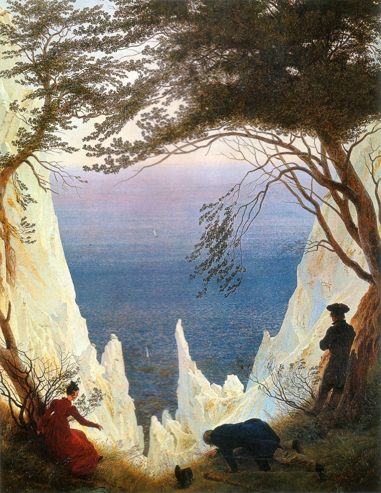

Los Acantilados de Rügen: Una Maravilla Natural en Alemania

En el norte de Alemania, en la pintoresca isla de Rügen, se encuentran los famosos Acantilados de Rügen, una maravilla natural que atrae a viajeros de todo el mundo. Con sus imponentes paredes de creta blanca que se elevan sobre el mar Báltico, este lugar es un paraíso para los amantes de la naturaleza, los fotógrafos y aquellos que buscan un escape tranquilo. En este artículo te contamos todo lo que necesitas saber para planificar tu visita a los Acantilados de Rügen.
Cómo llegar a los Acantilados de Rügen
Rügen es la isla más grande de Alemania y está conectada al continente por un puente y una carretera. Si viajas desde Berlín, puedes tomar un tren hasta Bergen auf Rügen o Sassnitz, ambas ciudades cercanas a los acantilados. Desde allí, puedes alquilar una bicicleta o tomar un autobús local para llegar al Parque Nacional de Jasmund, donde se encuentran los acantilados. Si prefieres conducir, el estacionamiento está disponible cerca de los puntos de acceso principales.
La mejor época para visitar
La mejor época para visitar los Acantilados de Rügen es durante los meses de primavera y verano, de mayo a septiembre. Durante este período, el clima es más cálido y las condiciones son ideales para caminar por los senderos y disfrutar de las vistas al mar. Sin embargo, el otoño también ofrece un paisaje espectacular con los colores dorados de los bosques cercanos. Si prefieres evitar las multitudes, considera visitar en temporada baja, aunque ten en cuenta que el clima puede ser más impredecible.
¿Qué no te puedes perder?
Los Acantilados de Rügen son famosos por su belleza, pero hay mucho más que explorar en esta zona. Aquí te dejamos algunos highlights:
- El mirador Königsstuhl: Este es el punto más famoso de los acantilados. Desde aquí, tendrás una vista panorámica impresionante del mar Báltico y las paredes blancas de creta.
- El sendero del acantilado: Un paseo por este sendero te permitirá disfrutar de vistas espectaculares desde diferentes ángulos. Es una experiencia inolvidable.
- El bosque de hayas: El Parque Nacional de Jasmund es hogar de antiguos bosques de hayas que han sido declarados Patrimonio de la Humanidad por la UNESCO.
- Sassnitz: Este pintoresco pueblo portuario es un buen lugar para relajarse después de explorar los acantilados. No te pierdas su puerto y sus restaurantes de mariscos frescos.
Comida típica de la región
Después de un día de exploración, disfruta de la gastronomía local. En Rügen, el pescado fresco es protagonista. Prueba el arenque ahumado o las clásicas Fischbrötchen (bocadillos de pescado) en los puestos locales. Además, no te pierdas el famoso Rügener Bienenstich, un pastel de miel y almendras que es un postre tradicional de la región.
Los Acantilados de Rügen son un destino que combina belleza natural, historia y gastronomía. Con un poco de planificación, tu visita será una experiencia inolvidable. ¡Buena aventura!
Haiktec
- Guía Práctica para Dueños de Perros Ocupados: 7 Estrategias Simples para un Cuidado Canino Sin Estrés
- Guía Práctica de Viaje para la Costa Alemana del Norte y Báltico: Itinerario y Gestor de Presupuesto
- Guía Esencial del Viajero: Descubre el Rin, Frankfurt y Heidelberg en 7 Pasos
Text mit KI erstellt und automatisch geprueft.